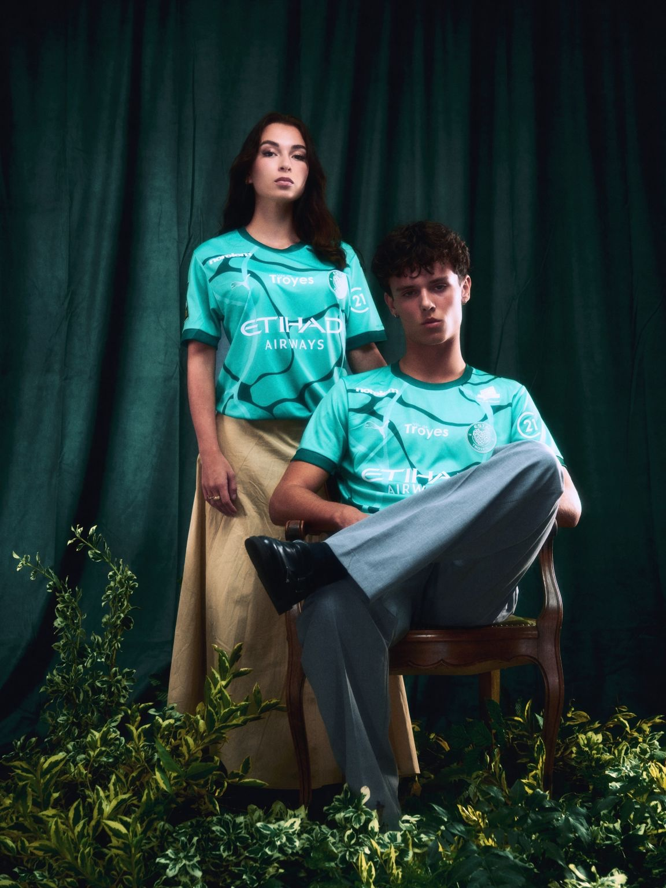
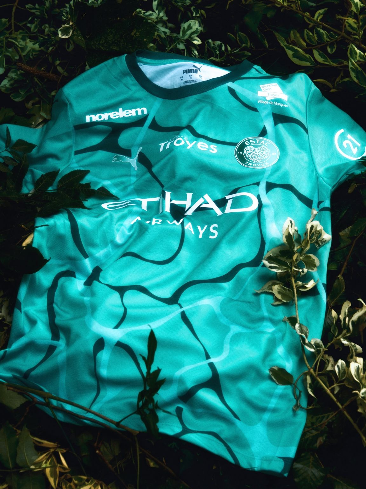
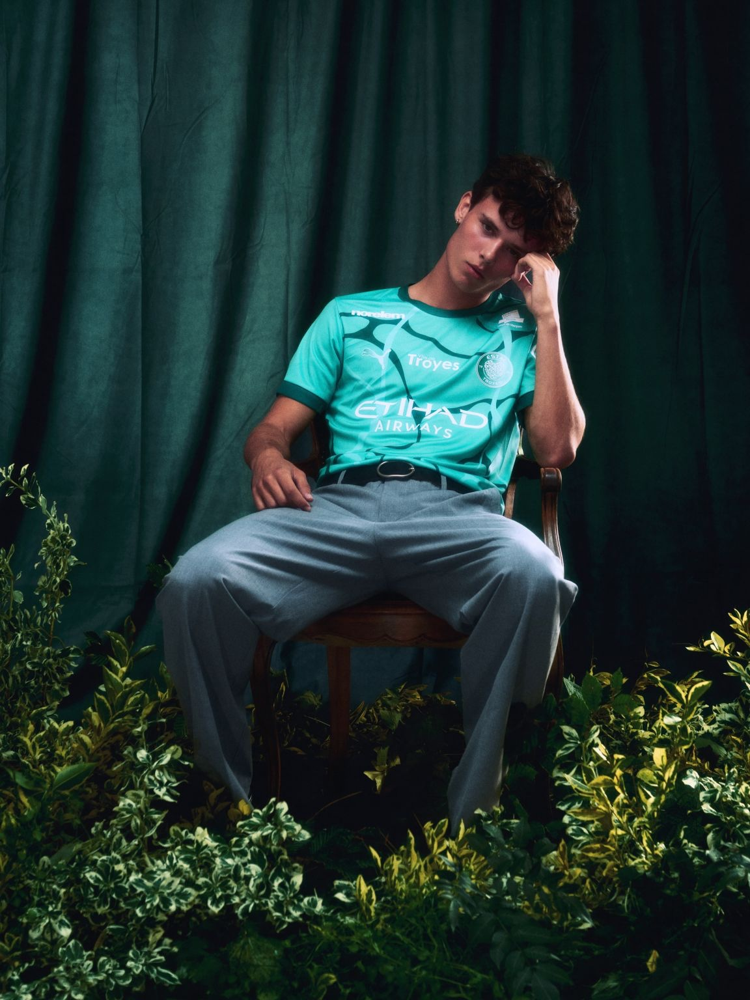
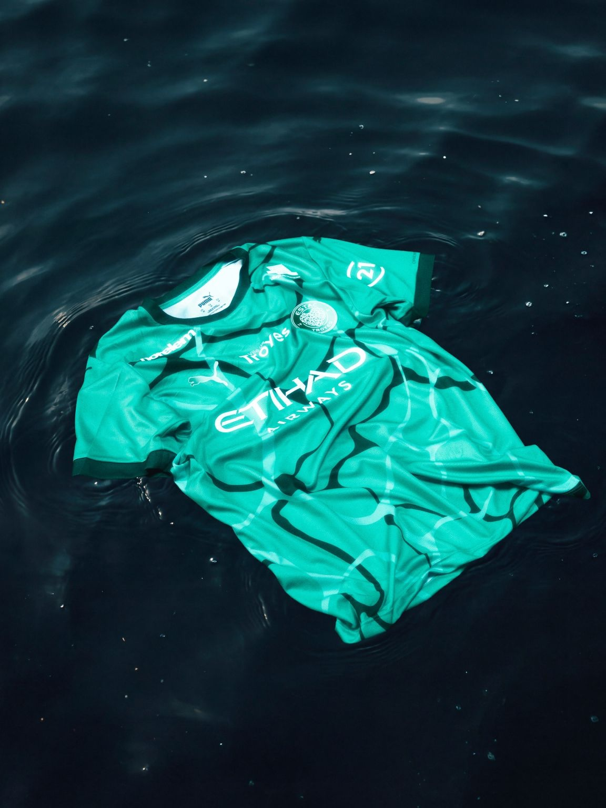
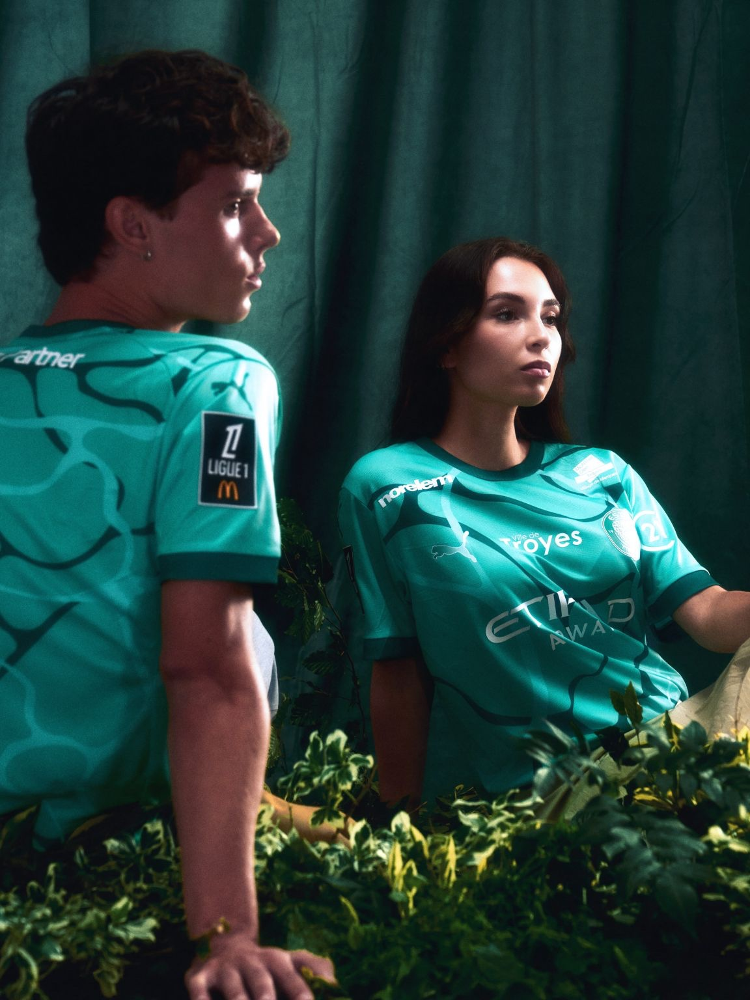

Le projet
Quand le maillot rencontre son territoire : pour le third 2026/2027 de l'ESTAC, l'eau écrit l'histoire.
Un vert d'eau inspiré des lacs de l'Aube (Orient, Temple et Amance), des motifs qui rappellent les reflets et les ondulations à la surface, le Cœur de Troyes en signature : tout est une affaire de racines.
Le parti pris : mettre le maillot dans son élément. Posé sur une eau sombre et profonde, il laisse les vagues dessiner le reste. Un shooting pensé et réalisé par Penalty Studio™ pour raconter un maillot qui porte son territoire bien au-delà de ses couleurs.


Mon rôle
Stylisme et assistante de production, aux côtés de Paul-Loup G.
Créditée au stylisme, j'ai participé à construire des silhouettes qui laissent le vert d'eau du maillot respirer : des tons doux, un pantalon gris ample, une jupe sable, en accord avec le velours et les feuillages du décor.
En tant qu'assistante de production, j'ai accompagné l'organisation du shooting et le suivi du plateau, du studio jusqu'à la séquence sur l'eau.


Crédits
- Client
- ESTAC Troyes
- Agence & production
- Penalty Studio™
- Direction artistique
- Paul-Loup G.
- Photographie
- Maxime Sebti
- Lumières
- Maxime Sebti
- Stylisme
- Paul-Loup G.
Lola Verhas - Cast
- Maina
Leo - Assistante de production
- Lola Verhas
- Lieu
- By Galerie
- Merci à
- Estelle Merlin